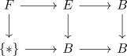

Leray-Hirsch for the identity fibration
Proposition
Let $R$ be a commutative ring,
\begin{align*}
F \rightarrow E \rightarrow B
\end{align*}
be a fiber sequence in top.
Assume that there exists homogeneous classes $x_i \in H^*(B,E;R)$ - at most finitely many for each degree - such that the image of $x_i$ under
\begin{align*}
H^*(B,E;r) \rightarrow H^*(\Sigma F;R)
\end{align*}
form a basis of the graded R-module $H^*(\Sigma F,R)$
Then this induces
\begin{align*}
\Phi_{\pi}: H^*(\Sigma F,R) \otimes_{R} H^*(B;R) \rightarrow H^*(B,E;R)
\end{align*}
Proof
follows from
